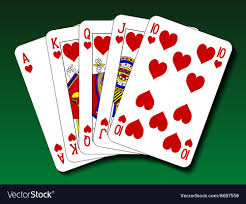
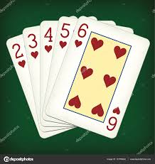
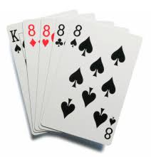
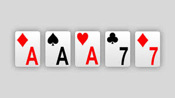
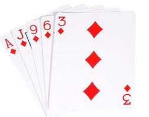
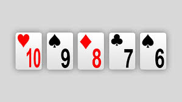
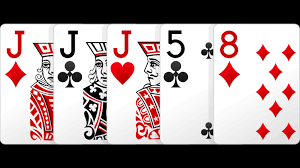
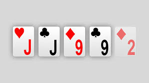
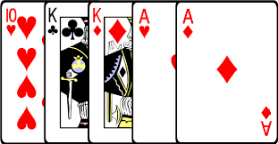
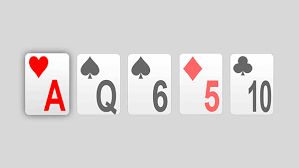

A person has a royal flush when they have an ace, king, queen, jack, and ten that are all the same suit.
A person has a straight flush when they have any 5 cards in order that are the same suit.
Four of a kind (or a quads) is exactly what it sounds like, four of the same card.
A full house (or a boat) is three of the same cards AND two of the same cards.
A flush is when all of the cards in your hand are the same suit (Spades,Hearts,Diamonds,Clubs).
A straight is any five cards as long as they are in order.
Three of a kind (or trips or a set) is three of any card.
Two pair is a pair of one card and a pair of another.
Any two cards of the same value
The cards ranked from lowest to highest are 2, 3, 4, 5, 6, 7, 8, 9, Ten, Jack, Queen, King, Ace (an ace can serve as a 1 or as a interval higher than a king in a straight, but is almost always treated as high otherwise in poker.)
